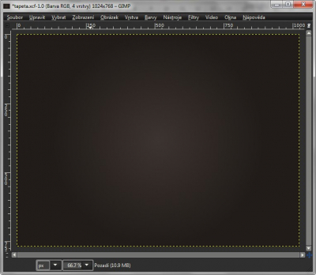
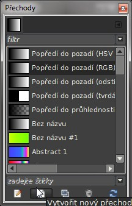
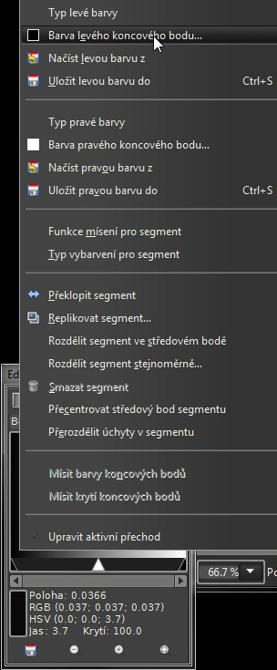
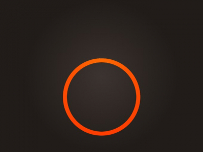
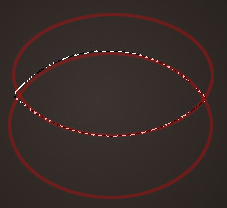
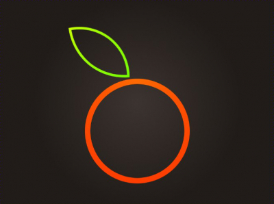
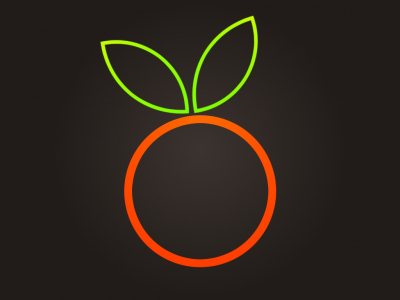

Web je již jen v režimu pro čtení a není možné přidávat nové komentáře nebo dotazy do fóra. Díky za přízeň.
Main menu
You are here
"Ovocná" tapeta
20. February 2013 - 11:09 — Lukáš
- Vytvoříme nový obrázek s rozměry 1024×768px
- Barvu popředí nastavíme na #3c3431 a barvu pozadí na #211c19
- Zvolíme si nástroj Přechod, jeho režim nastavíme na Radiální
- Plátno přetáhneme ze středu nahoru
 - Potřebujeme vytvořit nový přechod. Pokud nemáme, otevřeme si okénko Přechody klávesovou zkratkou CTRL+G (Nebo pomocí menu Okna → Dokovatelná dialogová okna → Přechody)
- V okénku Přechody klepneme na tlačítko „Vytvořit nový přechod“
 - V nově otevřeném okénku Editor přechodů do přechodu klepneme pravým tlačítkem, zvolíme „Barva levého koncového bodu“. Barvu nastavíme na #ff6c00. Stejným způsobem nastavíme barvu pravého koncového bodu na #ff3c00. Přechod si uložíme.
 - Vytvoříme si novou vrstvu, nazveme ji třeba základ
- Pod středem plátna vytvoříme kružnici. (Pokud chceme pravidelný kruh držíme SHIFT a CTRL). Kružnici vyplníme našim oranžovým přechodem směrem shora dolů. Přejdeme na menu Vybrat → Zmenšit, hodnotu nastavíme na 20, potvrdíme a stiskneme Delete.
 - Opět vytvoříme nový přechod:
– Barva levého koncového bodu: #c6ff00
– Barva pravého koncového bodu: #78ff00 - Teď budeme vytvářet lístky. Vytvoříme si tedy novou vrstvu – list1
- Samotný list vytvoříme pomocí eliptického výběru. Režim nastavíme na „Průnik aktuálním výběrem“ (Shift + CTRL) a nakreslíme dvě šišaté kružnice, jejich protnutí nám vytvoří list (viz. obrázek).
 - Výběr vyplnáme dříve připraveným „zeleným“ přechodem. Opět přejdeme na menu Vybrat → Zmenšit hodnotu nastavíme na 10, stiskneme Delete .
- Pomocí nástroje Přesun a Otáčení list přesuneme na správné místo.
 - Vrstvu list1 duplikujeme. Nástrojem překlopení zrcadlíme, nástrojem Přesun ji posuneme doleva, popřípadě ji trošičku zmenšíme nástrojem Škálování
 - Hotovo :)
{kind=link}
{kind=link}
{kind=link}
{kind=link}
{kind=link}
{kind=link}
{kind=link}
Zdroj: http://www.progimp.ru/articles/sozdaem_prostie_oboi_dlya_rabochego_stola
Kategorie:
Web je již ukončen. Nebude zde přibývat žádný nový obsah. Případné dotazy prosím na l.bacovsky(a)outlook.cz
Comments
Re: "Ovocná" tapeta
Re: "Ovocná" tapeta
Re: "Ovocná" tapeta
Re: "Ovocná" tapeta
Re: "Ovocná" tapeta
Re: "Ovocná" tapeta
Add new comment